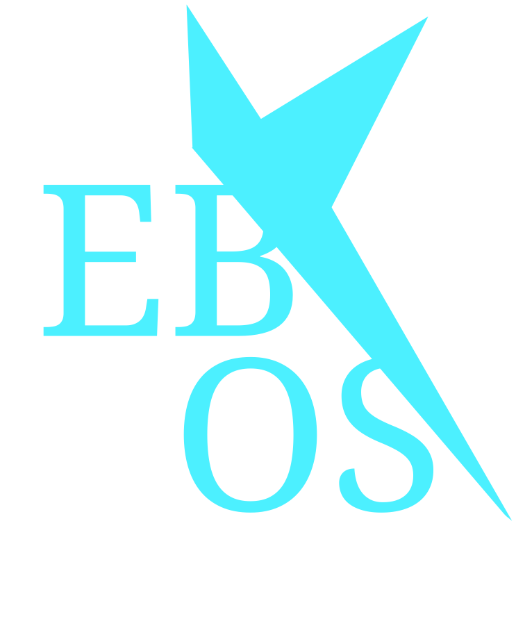
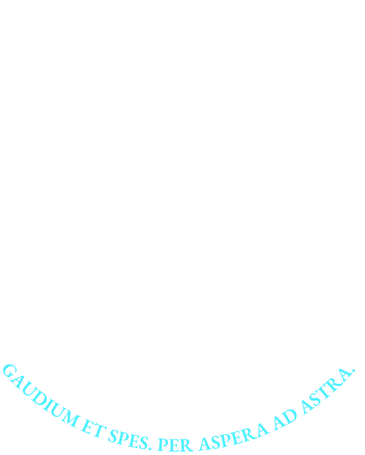

EB
//
OS
STELLAR INDEX v12.0
LAS VEGAS
--:--:--
EXIT SYSTEM
›
‹
RETURN
SKIP TO CORE ▸
↺ REPLAY
BEYOND // PHASE 1/5 · STATIC
CLICK / SPACE PAUSE · [ ] PHASE · ← / ESC RETURN


SKIP ▸
This portfolio needs JavaScript and WebGL.